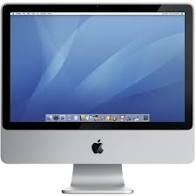

Equipment

Software
Service Features
- Advanced Branded Email Solutions -iMap Web or with Enhanced Outlook Client
- FaceTime-On-Net OR MultiPoint Private VideoConferencing - NonPublic
- Cisco Webex Teams Collaboration
- 3CX Unified Communications with PrivateChat/IM - Polycom Support - Mobile Work Phone Solutions
- Sharepoint Server Solutions with One SP Site
- Webmin Server Administration
- Visual Studio Development Resources
- GCC OpenSource Unix/Linux Compilers
- Xcode Development Platform
- CTS Grid Manager
- Fully Managed Host Compute - Up to 3 Virtual Machines Per Premise
- Real Time Monitoring - Per Family
- Business File Services & Enterprise Printing
- cPanel Personal or Business Hosting with PaperLanternDevelopment Environment
- Linux Remote Desktop with BlueFish Development Environment
- Coldfusion Builder Support
- Adobe DC Professional
- Libre Office Professional
- MAC Desktop Applications - Pages, Write, Etc
- Hosted Grid Database Services (CTS HA Templates) - Postgres SQL, MS-SQL Server, MySql, or Oracle Premium
- SDN Support - Zerotier(Free) - (Cisco - Avaya - Juniper - Microsoft - Premium)
- Micro Fully Managed - Proactive Monitoring for 5 Addresses/Sites - Additional Alarm Points - Cost+
- Unlimited Use of G/A FusionShell with 2 Hours of Installation Support
- G/A FusionOpen Backoffice Suite
- Personalized eFront Training Portal
- 1 .Info Domain + 2 Integrated Foreign Domains
- Public - 2nd DNS
Architectural Programs
- Intranet - (GAUS01) - Amazon - (CENTOS7) - (CTS PANEL-PRO-PRIVATE) - (CNC0H01) - 10.144.1.2 - CINCINNATI - OHIO - GREENVILLE ASSOCIATES
- Intranet - (CAPUS1) - Amazon - (WINSV19) - (CTS PANEL-PRO-WINDOWS) - (CNCOH01) - 10.144.1.1 - CINCINNATI - OHIO - CAPITOL TECHNOLOGY
- Intranet - (GAWEB1) - Google - (CENTOS7) - (CTS PANEL-PRO-SHARED) - (CDRIA01) - 10.144.3.1 - CEDAR RAPIDS - IOWA - GREENVILLE ASSOCIATES
Options - SSH/RDP/XRDP & MS-SQL Server 2019